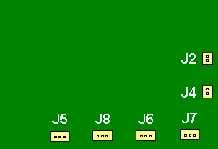
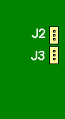
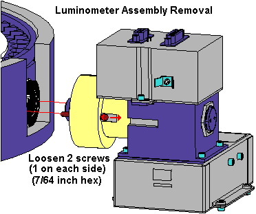

This procedure describes how to remove the analytical module from the instrument.
Perform this procedure when additional access is required for module service.
Warning: Potentially, the magnets in the analytical module are strong enough to interfere with medical devices, ferromagnetic implants, or loose metal objects in close proximity to the magnetic field. Consider the following:
Persons with medical devices or metal implants should not hold the wash arm side of the analytical module close to their body.
Consult your physician or your medical device manual for more information.
The magnetic field near the analytical module was measured:
near the wash arm: 26.4 mT.
one foot from the wash arm: 0.12 mT.
Remove the power from the luminometer.
Open the upper right front cover.
Remove power from the luminometer high-voltage power supply using the switch on the power distribution PCB labeled All DC power (except CPU and reagent coolers).
Caution: To avoid electrical sparks and damage to the electronics, do not disconnect the connectors on the top of the luminometer. Also, if you disconnect the connectors, the instrument will not initialize.
Disconnect the lower cable at the luminometer high-voltage power supply.
Note: The connector is located on the lower right side of the luminometer for most instruments. Some older DxI 800 instruments may have the cable located at the lower left side of the luminometer.
Working from the rear of the instrument, prepare for removal of the analytical module.
Remove the upper and center rear instrument covers.
Using a sharp object or pencil or pen, mark the location of the snap bracket on the baseplate.
Remove the snap bracket on the center rear cover (two screws).
Remove the substrate probe from the dispense probe plate, keeping the probe attached to the pump. Place the probe in a location where the probe and tubing cannot be contaminated or damaged.
Remove the connectors from the analytical module interface PCB located at the rear of the analytical module.
J1 - Ribbon Cable.
J2 - Analytical Module Motors Harness.
J3 - Analytical Module Power Harness.
Using a sharp object or pencil or pen, mark the location of the analytical module on the baseplate.
Remove the mounting bolt located at the left side of the module, close to the wash pick-and-place tower mount (3/16-inch hex screw).
Remove the bolt securing the hold-down bracket under the module (3/16-inch hex screw).
Remove the hold-down bracket.
The bracket is pinned and you might need to use a small screwdriver to loosen the bracket.
Working from the front of the instrument, prepare the cables for removal of the analytical module.
Disconnect the cables from the luminometer.
LumiControl (15-pin)
Signal (9- pin)
Ground
Disconnect the LED power connector under the analytical module by the luminometer.
Mark and then remove the connectors from the upper analytical module interface PCB on the left side of the upper right card cage.
Note: Mark the connectors before removal so that they can be identified during reassembly.

J2 - Mixer Motor
J4 - Mix Arm Eject
J5 - Disp Arm Home
J6 - Asp Arm Home
J7 - Eject Arm
J8 - Mixer Tach
Pull the disconnected cables through the metal channel next to the tubing connector panel.
Remove all the wires from the plastic clamp on top of the wash arm.
Cut the tie-wraps to separate these harnesses from the others:
Mixer Motor
Ejector Plate Sensor
Mixer Tach Sensor (routed through two plastic clips, one underneath the bracket)
Note where the tie-wraps were located, so that they can be replaced during reassembly.
Remove the temperature interface PCB cover at center of the instrument and to the left of the analytical module.
Mark and remove the connectors from the temperature interface PCB.
Note: Mark the connectors before removal so that they can be identified during reassembly.

J2 - Incubator Temperature thermistor
J3 - Wash Temperature thermistor.
To prevent snagging the thermistor cables while removing the module, confirm that the cables are free of obstructions.
Working from the front of the instrument, prepare the hardware for removal of the AU.
To provide more clearance during removal of the module, manually move the wash pick-and-place to the front of the instrument and the incubator pick-and-place to the left of the instrument.
Remove the three aspirate probes and the three dispense probes from the probe plates. Place the probes in a location where they cannot be damaged.
Remove the aspirate probe plate (three 9/64-inch hex screws).
Remove the aspirate probe wash collar or manifold from the dispense probe plate.
Disconnect the two pneumatic tubing on the air cylinder.
Remove the dispense probe plate and eject plate.
Note:
New dispense/eject plate has three 3/16-inch hex screws.
Old dispense/eject plate has one 5/32-inch button-head hex screw, two 3/16- inch hex screws.
Remove the two 3/16-inch hex screws securing the wash arm to the mounting plate.
Slide the wash arm away from the analytical module.
Disconnect the main pnuematic tubing on the wash arm pneumatic valve assembly.
Loosen the two 7/64-inch hex screws holding the luminometer to the analytical module housing, then remove the luminometer from the module.
Warning: Avoid exposing the luminometer lens to direct light. Cover the lens with a lens cap, if available.

Note:
The two mounting screws are located inside the yellow foam of the luminometer.
Rotate the yellow foam to align the holes in the foam and access the screws.
To facilitate removal of the luminometer, move the module slightly to the rear.
Remove the analytical module.
From the rear of the instrument, lift the module slightly to clear the placement pins.
Turning the module counter-clockwise, pull it towards the rear of the instrument until the wash arm is in front of the substrate pump bracket.
Tip the back of the module up, and guide the wash arm under and to the left of the substrate pump bracket while pulling the module from the back of the instrument.
Note: Ensure that all wires, cables, and tubing are not hooked while removing the module.
Remove the analytical module from the instrument, and place it on a flat work surface.
Clean up any spills, loose vessels, or the like, from the instrument baseplate.